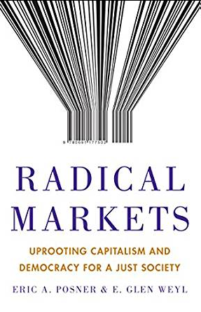
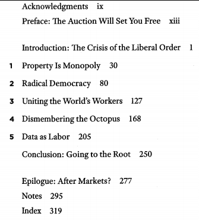
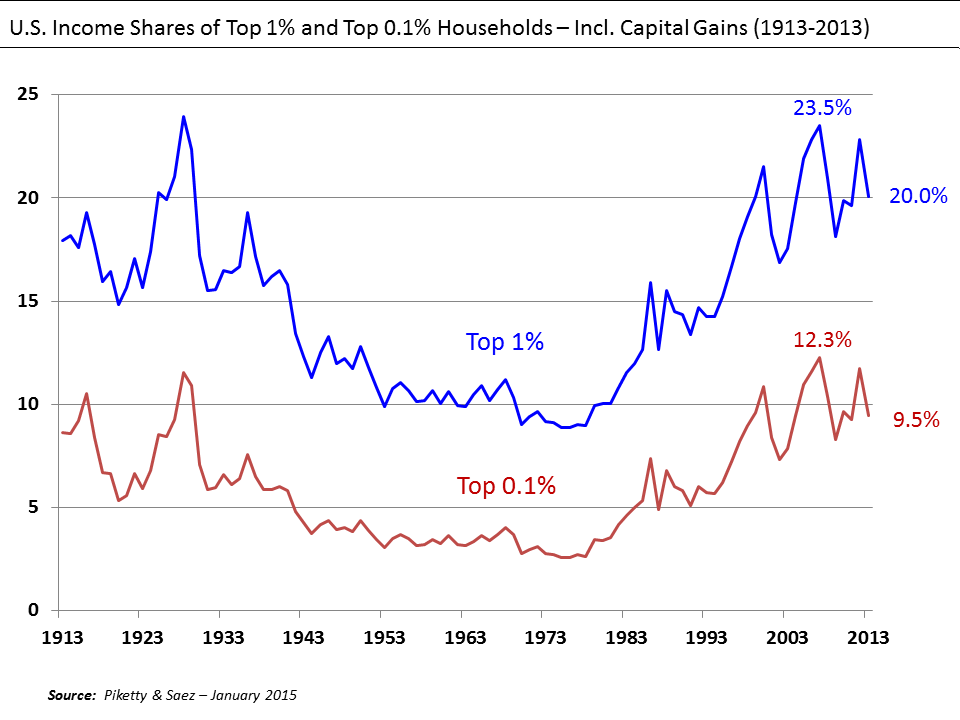
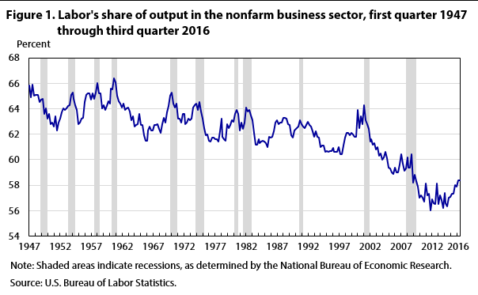

T2
김건우


“No longer bold reforms, they box us in.”
비크리가 제안한 경매개념을 전면화하여 자산 소유에 대한 개념을 바꾸자. “알박기를 막자” 자산 소유자가 스스로 가격을 매기고, 그에 따라 세금을 내되, 누군가 그 가격 이상으로 매수 의향을 보이면 즉각 소유권을 이전해야 한다. 사용권에 따른 이득은 인정하되, 점유권은 제한하는 방식.
1인1표는 최선이 아니다. 오히려 다수의 횡포가 발생하거나, 권력의 합법적 독점이 보장된다. 유권자에게 정책참여 사용할 수 있는 크레딧을 지급하여 투표권을 살 수 있도록 하는 능동적 투표 시스템을 도입하여 개선하자.
“자본의 세계는 평평하고, 노동의 세계는 그랜드 캐년이 득실거린다.(자본시장 개방, 반이민정책)”
"Visas between Individuals Program (VIP)"-비자 시스템에도 경매 도입. 정부가 탑다운으로 이민자를 가리는 대신, 개인 각자의 거래를 통해서 결정하자. 구글과 같은 세계 최고 인재를 영입하는 다국적 기업만 누리는 현재의 비자 정책을 폐기하고, 모든 개인이 비자 스폰서가 될 수 있도록 하자.
“펀드의 문어발 확장을 막자”
"대형 기관투자자들의 자본시장 독점을 막기 위한 새로운 반독점법”
20세기 초에 스탠다드 오일이 있었다면, 지금은 글로벌 대형운용기관이 존재.
전세계 주요 산업을 지배하는 이들의 편중된 지배권을 분산시키자.
“무료이용, 무상 데이터 기여” 패러다임은 old하다.
"인공지능 산업이 발전할 수록 현재의 데이터 유통 시스템은 비효율을 양산한다. 차별적인 보상이 없기에 좋은 데이터를 기여할 유인이 없으며, 생산에는 기여했으나 보상이 없으므로 자본 대비 노동 비중이 줄어든다.”
"대형 플랫폼 업체들의 데이터를 공급하고 있는 현재는 노동으로 규정되지 않는 행위를 노동으로 규정해 보상하자”
Why has this paradise fallen? How can its potential be fulfilled?
Market Fundamentalism, an ideology they assume to have been proven in economic theory and historical experience.
Left idea that exising social arrangements generate unfair inequality and undermine collective action. But Left's flaw has been its reliance on the discretionary power of government bureaucratic elites to fix social ills.
The Radical Markets we envision are institutional arrangements that allow the fundamental principles of market allocation - free exchange disciplined by competition and open to all comers-to play out fully. An auction is the quintessential Radical Market. Because the rules of an auction require people to bid against each other, the object on the block winds up in the hands of the person who wants it most-with the caveat that differences in bids may represent differences in wealth as well as desire.
다수의 사람들은 경매를 부동산이나 미술품, 자금조달 등에서만 사용하는 것으로 알고 있지만, 일반인의 눈에 닫지 않는 인터넷에서는 일상적으로 경매가 이루어지고 있다. 경매의 확대가 리오를 구할 것.
리오의 모든 빌딩, 사업, 공장 등이 모두 경매를 통해서 가격이 매겨진다고 가정하자. 누구든지 시가(going price)보다 더 높은 가격을 부르면 그 소유권을 가져갈 수 있다. 경매는 자동차와 같은 일상적인 소유물 뿐만 아니라 공장의 오염 배출권 같은 정치적인 과정에서도 이루어진다.
값을 부르는 것(bidding)은 스마트폰 앱으로 자동으로 계산된다고 가정한다. 법은 이렇게 소유권이 넘어가는 것을 확실하게 해서 혼동을 없앤다.
이러한 경매 세상에서는,
첫째, 사람들이 사유재산에 대해서 다르게 생각한다. 집을 소유하는 것과 해변의 한 지점을 소유하는 것 사이의 뚜렷했던 라인이 사라진다. 사유 재산은 상당 부분 공공 소유가 되고, 우리 주변의 소유권들이 부분적으로 우리것이 된다.
둘째, 영속적인 경매는 토지와 다른 자원의 낭비를 막는다. 언덕 지역을 가장 높은 가격에 산다고 부른 사람은 절대로 그 곳을 위험천만한 슬럼으로 만들지는 않을 것이다. 도시 중심부를 가장 비싼게 산 사람은 고만고만한 콘도가 아니라 마천루를 건설할 것이다.
셋째, 경제적 불평등의 주요 원천을 종식시킬 것이다. 이러한 제도가 시행될 경우 가장 먼저 머릿속에 그리게 되는 상황은 부자가 모든 가치있는 것들을 다 사버린다는 것이다. 그러나 부자라는 것이 무엇을 의미하는가? 기업, 토지 등등을 많이 소유한 사람 아닌가? 그러나 모든 것이 항상 경매에 부쳐진다면, 아무도 그러한 자산을 소유하려고 하지는 않을 것이다. 혜택은 모두가 동등하게 누릴 수 있다. 1장에서 자세히 설명한다.
넷째, 리오의 경매 시스템은 주요한 정치적 의사결정을 정치인이 아니라 시민의 손에 넘김으로서 부패를 제약한다. 공공의 삶이 개선되면서 범죄는 감소하고 거리의 삶은 회복되며 사설 커뮤니티로의 도망은 멈춘다. 일반적으로 공공 영역을 대체하고, 침해하는 이미지를 가진 시장과는 다르게 래디컬 마켓은 공공의 신뢰를 회복시킨다. 2장에서 이를 자세히 설명한다.
우리의 주장은 애덤 스미스의 지적 유산까지 거슬러 올라간다. 애덤 스미스는 시장 근본주의자들이 인용하기를 좋아하는 인물이다. 그러나 스미스는 급진적인 인물이었다.
“It was while he was designing a fiscal system for Venezuela that he produced the paper that finally undermined his best efforts at ensuring his obscurity.” “Counterspeculation, Auctions, and Competitive Sealed Tenders”
“Most of the work done by academics in the area of economics, law, and policy were devoted to justifying existing market institutions or offering moderate reforms than, in essence, preserved the status quo.”
The financial crisis of 2008
Economic progress was illusory. With the old ways of doing things in doubt and new directions unclear, public opinion polarized. Ideas have not kept up with the crisis.
현 시대 가장 큰 문제는 날로 커지고 있는 양극화다.

불평등은 신자유주의 경제학자들이 주장하는 활발한 경제 성장의 대가인가? 일부 학자들은 소득 양극화는 개인들의 숙련도 격차가 확대되면서 나타나는 현상이라고 주장. 그러나 양극화는 단순히 임금 노동자들의 소득 양극화로만 나타나는 현상이 아님.
1970년대 이래로 노동소득 배율의 급격한 하락이 관찰됨. 기업의 초과 이윤(독점이윤)이 GDP에 차지하는 비중은 상승, 마크업도 상승하였음. 동시에 이들 기업 가치는 함께 상승하였음.

가장 최근 경제 철학의 전환이 이루어진 것은 1970년대 스태그플레이션이 일어났을 때이다. 인플레이션이 완전 고용의 비용이라는 케인지안의 주장이 지배하던 시절이었다. 신자유주의와 공급 중시 경제철학이 대두하기 시작하였다. 그들은 감세, 규제 완화, 민영화 등 자본주의를 더 강화하는 것이 경제 성장을 촉진할 것이라고 주장하였다. 불평등이 심화되더라도 트리클 다운 효과로 인해서 모두의 삶이 더 나아질 것이라 주장하였다. 그러나 낙수효과는 커녕 경제 전체의 생산성이 둔화되는 결과가 초래되었다. 2차대전 이후 2004년까지 미국의 평균 생산성 증가율은 2.25%였으니 2005년 이후에는 1.25%로 낮아졌다. 다른 주요 선진국들도 마찬가지 패턴이 관찰되었다.
장기 실업에 대한 국가별 정책 차이에 따라서 실업과 misemployment가 발생하였다. 유럽은 실업률이 올라갔고, 미국은 경제활동참가률이 96%에서 88% 수준으로 하락하였다.
전반적인 노동과 자본의 비효율적인 배분은 경제 성장률 상승을 제약하였다. 오늘날 젊은 세대는 부모세대보다 더 못사는 세대가 될 가능성이 높아졌다.
Stagnequality가 대두하였다.“But judges are members of the elite and tend to be out of touch with what life is like for many ordinary citizens. 법관들의 판결은 문화적 갈등을 잠재우기보다 종종 더욱 심화시킨다.”
우리의 영웅들인 “철학적 급진주의자"들은 봉건적 시장독점에서 자유시자으로 경제 체계를 바꾸어서 당시의 대중의 욕구를 반영한 정치시스템을 구축하고, 내부의 갈등을 완화시키며, 다수의 대중이 혜택을 받고, 전통적인 엘리트의 힘을 약화시키는 국제 협력 시스템을 구축하고자 했었다. 현재 우리에게 필요한 바로 그것들이다.
아담 스미스는 개별 구성원들의 호의가 아니라 이득에 따라서 경제가 돌아가는 시장을 이야기 하였다. Self-interested behavior가 public good이 될 수 있다는 주장은 지금은 진부하지만 당시에는 기본 상식과 배치되는 매우 쇼킹한 발상이었다. 과거에는 “Moral economies"가 작동하는 시절이었다. 자기이익에 기반한 행위가 번영의 원천이라는 인식은 약했다.
도덕에 기반한 경제가 시장 경제보다 장점이 있기도 했다. 그러나 교역의 범위와 규모가 커지면서 모럴 이코노미는 해체되었다. 우리는 대량생산과 글로벌 공급 사슬로 부터 이득을 얻고 있다. 왜냐하면 고정 비용이 전세계 수천만 사람들에게 분산되고, 분업과 전문화를 통해서 전세계에서 가장 유리한 조건의 투입을 달성할 수 있기 때문이다. 그러나 전세계 다수가 동시에 상품을 소비한다면, 그들이 상품에 이상이 있을때 함께 보이콧하기는 힘들다.
중앙의 계획에 기반한 경제는 “wage slavery"로 가는 것을 막는 대안으로 여겼으나 궁극적으로 실패하였다. 개개인의 다양성과 선호를 계획에 일일이 다 담을수는 없었기 때문이다.
결과적으로 시장 경제는 과거 모럴경제보다 규모와 효율성에서 우월한 체제로 남았고, 대안으로 제시되었던 막시즘에 비해서도 거대한 경제를 운영하는데 우월한 것으로 나타났다.
시장 경제에 대한 다른 더 나은 대안이 없다는 시장은 어떻게 조직되어야 하는지 질문할 필요가 있다. 자유 시장(개인의 의지에 반하여 권력이 행사될 경우는 다른사람의 권익을 침하는 것을 막을 경우이다), 경쟁적인 시장(가격에 대한 영향력), 개방된 시장(국경, 인종, 성 등에 관계없이 시장 교환에 참가할 수 있어야 한다)
봉건적 질서, 귀족의 독점이 사라진 사이 새로운 형태의 독점이 등장했다. 그들은 공장, 철도, 자연 자원을 모두 독차지 했고, 정치와 언론을 부패하게 했다. 이에 대한 대안으로 새로운 자유주의적 개혁자들이 등장하였는데, 헨리 조지, 레옹 왈라스, 베아트리체 웹 등이다. 철학적 급진주의자들의 유산을 이어 받아서 독점 기업들의 힘을 제약하는 반독점정책, 노조 지원법 등을 만들었다. 사회보험, 누진적 조세, 의무 교육 등이 기회에 대한 접근을 높여서 경쟁을 강화시켰다. 글로벌 협력이 확대되면서 리버럴한 질서가 강화되었다.
그러나 사유 재산권은 시장 지배력을 강화시켜 불평등을 심화시켰다. 1인1표는 다수가 소수를 억압하는 도구가 되었다. 2차 세계 대전에서의 승리와 냉전에서의 승리는 자만을 불러왔고, 현실 안주와 내부 분열을 초래했다.
Hosing market vs. Grain market
완전경쟁은 비현실적인 가정이다.
완전경쟁은 커녕 시장 지배력이 만연해 있고, 현재의 자본주의 구조에 내재하고 있으며, 저성장-양극화와 정치적 갈등의 지배적인 원천이다. 민간 독점의 한켠에서 정부에서 독점적으로 제공하는 상품과 서비스에도 문제가 있다. 정치적 영향력에 대한 시장이 필요하다. 돈으로 정치가 좌우되면 문제가 있는 것으로 쉽게 생각할 수 있지만, 현재의 1인1표제는 다수가 소수를 억안한다는 점에서 이상적인 모델이 아니다.
정치 뿐만 아니다. 이민 제한 정책은 국가간 노동력 이동을 막고 있고, 디지털 경제에서 가장 중요한 자원인 데이터는 데이터 제공자에게 제대로 보상되고 있지 않다.
"완전 경쟁으로 상정된 시장이 독점과 시장의 부존으로 채워져 있다.”
“하이퍼루프와 토지 소유권”
“Several holdouts would quickly squash the project.”
“But eminent domain (by government) is often unfair and always politically controversial.”
Capitalism advanced in tandem with the scientific and technological innovations that made trade a valuable and significant part of the economy.
그러나 당시 자본주의의 이득은 부루주아지에게 집중되었고, 귀족들은 토지를 비효율적으로 방치하고 있었음. 헨리 조지의 <진보와 빈곤>이 등장하여 19세기 자본주의 사회의 역설을 비판적으로 고찰 ① 경제법칙과 도덕법칙은 하나이다. ② 독점과 토지사유는 도덕법칙에 어긋나는 경제적 불의이다. ③ 이 같은 경제적 불의가 존재하는 한 진보 속의 빈곤 주기적 불황 사회와 문명의 쇠퇴는 불가피하다. ④ 자유거래와 토지가치세를 실행하지 않으면 이러한 문제들 (land value taxation) 은 해결할 길이 없다.
Like a monopolist, the landowner can earn higher returns on the sale of her land by holding out for a generous offer (effectively withholding supply from the market) rather than selling to the first person who offers a fair price. In the meantime, the land is unused or underused. Thus, private ownership may actually hamper allocative efficiency. Monopoly power blocked the path of progress.
Nobel Laureate Ronald Coase called these frustrations the “transaction costs of the market.” So, while corporate planning played an important role in the economy, and helped overcome many local mo-nopoly problems, it never supplanted markets as the primary means of organization. “중앙 계획=사회주의”, “분산 계획=시장 경제” 1시장 = 1000개 기업 –> 완전경쟁 1시장 = 1개 기업 –> 독점 독점 시장에서는 기업 계획=중앙 계획=사회주의
The land and the building, even the neigh-borhood, are so tied together, it would be hard to figure out a separate value for each of them.
Ludwig von Mises and Friedrich Hayek, who were students of the third marginal revolutionary, Carl Menger, pointed out the flaw in central planning: those who undertake it lack the information and analytical capacity to make the best allocative decisions. People’s valuations are private information; the genius of the market is its capacity for disseminating this in-formation from consumers to producers through the price system. Central planning, in contrast, results in massive mis-allocation of resources—the production of goods no one wanted—that was characteristic of real- world socialist econo-mies like that of the Soviet Union.
In his 1966 edition of The Theory of Price, he promoted the “Coase Theorem” as a justification for the sim-plistic idea that private bargaining that takes place under any set of strong and clearly defined property rights will usually lead to efficient outcomes. This misinterpretation assumes away the monopoly problem, implying the superiority of pri-vate property because it enhances investment efficiency.
“We refer to this tax as a “common ownership self- assessed tax” (COST) on wealth. The COST on wealth is also the cost of (holding) wealth. “Common ownership” refers to the way in which the tax modifies traditional private property. The two most important “sticks” in the bundle of rights that compose private property are the “right to use” and the “right to ex-clude.” With a COST, both rights are partly transferred from the possessor to the public at large.”
자산에 대한 가격을 소유자가 스스로 매기고, 그에 근간해서 세금을 징수… 해당 가격 이상으로 사곘다는 매수자가 나타나면 소유권을 넘겨주어야 하는 경매시스템을 도입
https://www.aeaweb.org/conference/2018/preliminary/paper/2Y7N88na
현대 디지털 경제에서 사용자는 온라인 서비스나 플랫폼을 무료로 사용하는 대신에 플랫폼 소유자에게 무료로 데이터를 제공
따라서 데이터는 생산한 사용자가 소유권을 갖기 보다는 플랫폼 소유자에게 “자본”으로서 사유되는데, 시카고대 경제학과 교수를 지내기도 한 웨일과 동료들에 따르면 이러한 디지털 경제는 “비효율적” 혹은 “비생산적”이다.
자본으로서 데이터가 유통되는 시스템은 기업가정신의 함양에는 도움이 되나, 데이터에 기반한 인공지능 산업이 발전할수록 비효율적일 수 있다는 것. 무엇보다도 효과적 학습에 기여하는 양질의 데이터 생산에 대해 차별적으로 보상해 주지 않기 때문.
자본으로서 데이터가 유통되는 사회에서 데이터가 핵심 생산요소를 차지할수록 자본에 비한 노동의 비중은 작아지고, 궁극에는 생산에 기여한 노동과 무관한 기본소득이 노동의 댓가인 임금을 대체할 수밖에 없다.
.footnote[[1]연세대 강정한 인용]
자본으로서 데이터 유통에 대한 대안으로, 웨일 그룹은 노동으로서 데이터를 유통시키고 데이터 생산에 기여한 노동의 몫만큼 보상할 것을 제안한다. 이러한 제도 하에서는 더이상 무료 서비스에 대한 무료 데이터 제공이라는 사회적 합의가 유효하지 않다.
그보다는 데이터 생산 활동을 노동시장화시켜서 전통적인 임금 노동 시장의 쇠퇴를 보완해야 한다. 데이터에 대한 소유권은 자본가가 아닌 디지털 시민 개개인에게 있다. 그들의 활동은 소비가 아닌 생산 활동으로서 존엄성을 회복하고, 궁극적으로 시민들이 더 가치있는 데이터를 생산할 유인력이 높아질 것.
이러한 보상체계를 마련하는 과정은 인공지능을 인간의 노동을 대체하는 힘이 아닌, 인간의 노동 생산성을 향상시키는 기술로서 자리매김시키는 정치경제학적 사회변동이 될 것이다.